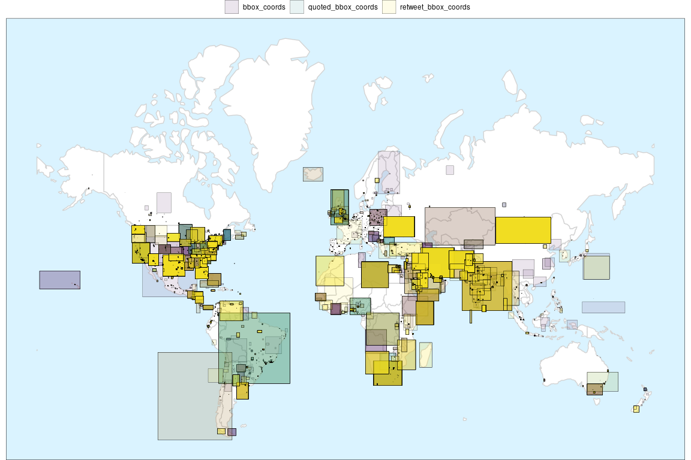

Introduction
{tweetio}’s goal is to enable safe, efficient I/O and transformation of Twitter data. Whether the data came from the Twitter API, a database dump, or some other source, {tweetio}’s job is to get them into R and ready for analysis.
{tweetio} is not a competitor to {rtweet}: it is not interested in collecting Twitter data. That said, it definitely attempts to compliment it by emulating its data frame schema because…
- It’s incredibly easy to use.
- It’s more efficient to analyze than a key-value format following the raw data.
- It’d be a waste not to maximize compatibility with tools built specifically around
{rtweet}’s data frames.
Installation
You’ll need a C++ compiler. If you’re using Windows, that means Rtools.
if (!requireNamespace("remotes", quietly = TRUE)) install.packages("remotes") remotes::install_github("knapply/tweetio")
Usage
library(tweetio)
{tweetio} uses {data.table} internally for performance and stability reasons, but if you’re a {tidyverse} fan who’s accustomed to dealing with tibbles, you can set an option so that tibbles are always returned.
Because tibbles have an incredibly informative and user-friendly print() method, we’ll set the option for examples. Note that if the {tibble} package is not installed, this option is ignored.
options(tweetio.as_tibble = TRUE)
You can check on all available {tweetio} options using tweetio_options().
Simple Example
First, we’ll save a stream of tweets using rtweet::stream_tweets().
temp_file <- tempfile(fileext = ".json") rtweet::stream_tweets(timeout = 15, parse = FALSE, file_name = temp_file)
We can then pass the file path to tweetio::read_tweets() to efficiently parse the data into an {rtweet}-style data frame.
tiny_rtweet_stream <- read_tweets(temp_file) tiny_rtweet_stream
#> # A tibble: 654 x 84
#> user_id status_id created_at screen_name text source reply_to_status… reply_to_user_id reply_to_screen… is_quote is_retweeted lang name
#> <chr> <chr> <dttm> <chr> <chr> <chr> <chr> <chr> <chr> <lgl> <lgl> <chr> <chr>
#> 1 717433… 13013757… 2020-09-03 12:25:39 takanaonli… "202… "<a h… <NA> <NA> <NA> FALSE FALSE und Taka…
#> 2 130137… 13013757… 2020-09-03 12:25:40 wiwiwiww32 "#โร… "<a h… <NA> <NA> <NA> FALSE FALSE th wiwi…
#> 3 101509… 13013757… 2020-09-03 12:25:40 Marcerbdz "Muy… "<a h… <NA> <NA> <NA> FALSE FALSE es Marc…
#> 4 570830… 13013757… 2020-09-03 12:25:40 mio_1228_m… "はーー… "<a h… <NA> <NA> <NA> FALSE FALSE ja M.M.…
#> 5 124756… 13013757… 2020-09-03 12:25:40 NAsuka_05 "子供と… "<a h… <NA> <NA> <NA> FALSE FALSE ja 狂気と混…
#> 6 192201… 13013757… 2020-09-03 12:25:40 renverser_ "의사들… "<a h… <NA> <NA> <NA> FALSE FALSE ko 애당러 …
#> 7 404527… 13013757… 2020-09-03 12:25:40 koki0110f "@im… "<a h… 130137553829709… 3275624936 impulse400_nao FALSE FALSE ja Koki…
#> 8 852170… 13013757… 2020-09-03 12:25:40 micamica99 "RT … "<a h… <NA> <NA> <NA> FALSE FALSE ja みかん…
#> 9 116133… 13013757… 2020-09-03 12:25:40 JuanZam1308 "RT … "<a h… <NA> <NA> <NA> FALSE FALSE es Blac…
#> 10 130066… 13013757… 2020-09-03 12:25:40 Suman02381… "RT … "<a h… <NA> <NA> <NA> FALSE FALSE hi Suman
#> # … with 644 more rows, and 71 more variables: location <chr>, description <chr>, url <chr>, protected <lgl>, followers_count <int>,
#> # friends_count <int>, listed_count <int>, statuses_count <int>, favourites_count <int>, account_created_at <dttm>, verified <lgl>,
#> # account_lang <chr>, profile_banner_url <chr>, profile_image_url <chr>, contributors_enabled <lgl>, hashtags <list>, urls_expanded_url <list>,
#> # media_url <list>, media_type <list>, mentions_user_id <list>, mentions_screen_name <list>, quoted_status_id <chr>, quoted_text <chr>,
#> # quoted_created_at <dttm>, quoted_source <chr>, quoted_favorite_count <int>, quoted_quoted_count <int>, quoted_user_id <chr>,
#> # quoted_screen_name <chr>, quoted_name <chr>, quoted_followers_count <int>, quoted_friends_count <int>, quoted_statuses_count <int>,
#> # quoted_location <chr>, quoted_description <chr>, retweet_status_id <chr>, retweet_text <chr>, retweet_created_at <dttm>, retweet_source <chr>,
#> # retweet_favorite_count <int>, retweet_retweet_count <int>, retweet_user_id <chr>, retweet_screen_name <chr>, retweet_name <chr>,
#> # retweet_followers_count <int>, retweet_friends_count <int>, retweet_statuses_count <int>, retweet_location <chr>, retweet_description <chr>,
#> # place_url <chr>, place_name <chr>, place_full_name <chr>, place_type <chr>, country <chr>, country_code <chr>, bbox_coords <list>,
#> # quoted_place_url <chr>, quoted_place_name <chr>, quoted_place_full_name <chr>, quoted_place_type <chr>, quoted_country <chr>,
#> # quoted_country_code <chr>, quoted_bbox_coords <list>, retweet_place_url <chr>, retweet_place_name <chr>, retweet_place_full_name <chr>,
#> # retweet_place_type <chr>, retweet_country <chr>, retweet_country_code <chr>, retweet_bbox_coords <list>, campaign_ids <list>Performance
rtweet::parse_stream() is totally sufficient for smaller files (as long as the returned data are valid JSON), but tweetio::read_tweets() is much faster.
small_rtweet_stream <- "inst/example-data/api-stream-small.json.gz" res <- bench::mark( rtweet = rtweet::parse_stream(small_rtweet_stream), tweetio = tweetio::read_tweets(small_rtweet_stream) , check = FALSE, filter_gc = FALSE, relative = TRUE ) res[, 1:9]
#> # A tibble: 2 x 6
#> expression min median `itr/sec` mem_alloc `gc/sec`
#> <bch:expr> <dbl> <dbl> <dbl> <dbl> <dbl>
#> 1 rtweet 32.3 29.2 1 37.1 3.71
#> 2 tweetio 1 1 29.1 1 1With bigger files, using rtweet::parse_stream() is no longer realistic, especially if the JSON are invalid, but big tweet data sets are where {tweetio} can help.
many_files <- dir("inst/example-data/", full.names = TRUE, recursive = TRUE) scales::number_bytes(sum(file.size(many_files)))
big_df <- read_tweets(many_files) big_df
#> # A tibble: 701,715 x 84
#> user_id status_id created_at screen_name text source reply_to_status… reply_to_user_id reply_to_screen… is_quote is_retweeted lang name
#> <chr> <chr> <dttm> <chr> <chr> <chr> <chr> <chr> <chr> <lgl> <lgl> <chr> <chr>
#> 1 194250… 11780078… 2019-09-29 02:05:23 Stgo_centro "RT … "<a h… <NA> <NA> <NA> FALSE FALSE es El S…
#> 2 825459… 11780078… 2019-09-29 02:05:24 taylorxkas… "RT … "<a h… <NA> <NA> <NA> FALSE FALSE en tayyy
#> 3 218889… 11780078… 2019-09-29 02:05:24 markaduck "@_C… "<a h… <NA> 3193408588 _CeeDeeThree FALSE FALSE en Mark…
#> 4 401300… 11780078… 2019-09-29 02:05:25 unmario "Fot… "<a h… <NA> <NA> <NA> FALSE FALSE it mari…
#> 5 294908… 11780078… 2019-09-29 02:05:25 ALmardoza21 "@Es… "<a h… 117782418292045… 107959364313085… EsrodKatia FALSE FALSE und Ana …
#> 6 111622… 11780078… 2019-09-29 02:05:27 singhbhrme… "RT … "<a h… <NA> <NA> <NA> FALSE FALSE hi भरमे…
#> 7 231344… 11780078… 2019-09-29 02:05:27 barbimoral… "Mi … "<a h… <NA> <NA> <NA> FALSE FALSE es bárb…
#> 8 437465… 11780078… 2019-09-29 02:05:27 javii_sotoo "RT … "<a h… <NA> <NA> <NA> TRUE FALSE en Javi
#> 9 117288… 11780078… 2019-09-29 02:05:29 nLfRH1 "RT … "<a h… <NA> <NA> <NA> FALSE FALSE ar سما …
#> 10 113247… 11780078… 2019-09-29 02:05:30 bexxxv97 "RT … "<a h… <NA> <NA> <NA> FALSE FALSE en Becc…
#> # … with 701,705 more rows, and 71 more variables: location <chr>, description <chr>, url <chr>, protected <lgl>, followers_count <int>,
#> # friends_count <int>, listed_count <int>, statuses_count <int>, favourites_count <int>, account_created_at <dttm>, verified <lgl>,
#> # account_lang <chr>, profile_banner_url <chr>, profile_image_url <chr>, contributors_enabled <lgl>, hashtags <list>, urls_expanded_url <list>,
#> # media_url <list>, media_type <list>, mentions_user_id <list>, mentions_screen_name <list>, quoted_status_id <chr>, quoted_text <chr>,
#> # quoted_created_at <dttm>, quoted_source <chr>, quoted_favorite_count <int>, quoted_quoted_count <int>, quoted_user_id <chr>,
#> # quoted_screen_name <chr>, quoted_name <chr>, quoted_followers_count <int>, quoted_friends_count <int>, quoted_statuses_count <int>,
#> # quoted_location <chr>, quoted_description <chr>, retweet_status_id <chr>, retweet_text <chr>, retweet_created_at <dttm>, retweet_source <chr>,
#> # retweet_favorite_count <int>, retweet_retweet_count <int>, retweet_user_id <chr>, retweet_screen_name <chr>, retweet_name <chr>,
#> # retweet_followers_count <int>, retweet_friends_count <int>, retweet_statuses_count <int>, retweet_location <chr>, retweet_description <chr>,
#> # place_url <chr>, place_name <chr>, place_full_name <chr>, place_type <chr>, country <chr>, country_code <chr>, bbox_coords <list>,
#> # quoted_place_url <chr>, quoted_place_name <chr>, quoted_place_full_name <chr>, quoted_place_type <chr>, quoted_country <chr>,
#> # quoted_country_code <chr>, quoted_bbox_coords <list>, retweet_place_url <chr>, retweet_place_name <chr>, retweet_place_full_name <chr>,
#> # retweet_place_type <chr>, retweet_country <chr>, retweet_country_code <chr>, retweet_bbox_coords <list>, campaign_ids <list>Data Dumps
A common practice for handling social media data at scale is to store them in search engine databases like Elasticsearch, but it’s (unfortunately) possible that you’ll need to work with data dumps.
This has three unfortunate consequences:
- Routines that were purpose-built to work directly with
{rtweet}’s data frames can’t play along with your data. - You’re going to waste most of your time (and memory) getting data into R that you’re not going to use.
- The data are very tedious to restructure in R (lists of lists of lists of lists of lists…).
{tweetio} solves this by parsing everything and building the data frames at the C++ level, including handling GZIP files for you.
Spatial Tweets
If you have {sf} installed, you can use as_tweet_sf() to only keep those tweets that contain valid bounding box polygons or points.
tweet_sf <- as_tweet_sf(big_df) tweet_sf$geometry
#> Geometry set for 7988 features
#> geometry type: POLYGON
#> dimension: XY
#> bbox: xmin: -178.4436 ymin: -56.55736 xmax: 176.6977 ymax: 70.09222
#> CRS: EPSG:4326
#> First 5 geometries:There are currently four columns that can potentially hold spatial geometries:
"bbox_coords""quoted_bbox_coords""retweet_bbox_coords""geo_coords"
You can select which one to use to build your sf object by modifying the geom_col= parameter (default: "bbox_coords")
as_tweet_sf(big_df, geom_col = "retweet_bbox_coords")$geometry
#> Geometry set for 12773 features
#> geometry type: POLYGON
#> dimension: XY
#> bbox: xmin: -157.9505 ymin: -56.55736 xmax: 174.8954 ymax: 66.59999
#> CRS: EPSG:4326
#> First 5 geometries:You can also build all the supported bounding boxes by setting geom_col= to "all".
all_bboxes <- as_tweet_sf(big_df, geom_col = "all") all_bboxes[, c("which_geom", "geometry")]
#> Simple feature collection with 23199 features and 1 field
#> geometry type: POLYGON
#> dimension: XY
#> bbox: xmin: -178.4436 ymin: -56.55736 xmax: 176.6977 ymax: 70.09222
#> CRS: EPSG:4326
#> # A tibble: 23,199 x 2
#> which_geom geometry
#> <chr> <POLYGON [°]>
#> 1 bbox_coords ((-97.51982 35.15327, -97.51982 35.29133, -97.37053 35.29133, -97.37053 35.15327, -97.519...
#> 2 bbox_coords ((8.665852 44.37908, 8.665852 44.51991, 9.095838 44.51991, 9.095838 44.37908, 8.665852 44...
#> 3 bbox_coords ((-106.9506 31.12068, -106.9506 31.78387, -106.1854 31.78387, -106.1854 31.12068, -106.95...
#> 4 bbox_coords ((-63.39386 -41.03501, -63.39386 -33.26014, -56.66584 -33.26014, -56.66584 -41.03501, -63...
#> 5 bbox_coords ((30.42998 39.76794, 30.42998 39.80569, 30.55928 39.80569, 30.55928 39.76794, 30.42998 39...
#> 6 bbox_coords ((-118.6684 33.70454, -118.6684 34.33704, -118.1554 34.33704, -118.1554 33.70454, -118.66...
#> 7 bbox_coords ((139.136 36.24259, 139.136 36.4086, 139.2828 36.4086, 139.2828 36.24259, 139.136 36.24259))
#> 8 bbox_coords ((135.5633 34.68448, 135.5633 34.7202, 135.6046 34.7202, 135.6046 34.68448, 135.5633 34.6...
#> 9 bbox_coords ((-119.0618 34.12687, -119.0618 34.25008, -118.776 34.25008, -118.776 34.12687, -119.0618...
#> 10 bbox_coords ((-63.78454 -35.6894, -63.78454 -35.64174, -63.72472 -35.64174, -63.72472 -35.6894, -63.7...
#> # … with 23,189 more rowsFrom there, you can easily use the data like any other {sf} object.
library(ggplot2) world <- rnaturalearth::ne_countries(returnclass = "sf") world <- world[world$continent != "Antarctica", ] all_bboxes <- all_bboxes[order(sf::st_area(all_bboxes$geometry), decreasing = TRUE), ] ggplot(all_bboxes) + geom_sf(fill = "white", color = "lightgray", data = world) + geom_sf(aes(fill = which_geom), color = "black" , alpha = 0.1, size = 0.1, show.legend = TRUE) + coord_sf(crs = 3857) + scale_fill_viridis_d() + scale_color_viridis_d() + theme_void() + theme(legend.title = element_blank(), legend.position = "top", panel.background = element_rect(fill = "#daf3ff"))

Tweet Networks
If you want to analyze tweet networks and have {igraph} or {network} installed, you can get started immediately using tweetio::as_tweet_igraph() or tweetio::as_tweet_network().
as_tweet_igraph(big_df)
#> IGRAPH 7f0ddba DN-- 629527 1341113 --
#> + attr: name (v/c), status_id (e/c), created_at (e/n), relation (e/c)
#> + edges from 7f0ddba (vertex names):
#> [1] 194250838 ->340309688 825459487821619201 ->966825602 1116228559616397312->3153145782
#> [4] 4374655520 ->4167284315 1172885625068036102->1112877891841343488 1132474594583928832->1217220278
#> [7] 20737729 ->39334221 2198859787 ->3096758526 3237877098 ->847885187325276164
#> [10] 868219009350676481 ->1962155772 2374444356 ->772252481581645824 1128846892966850560->374194112
#> [13] 1121455512283832320->1052159172 1165554985406304257->1066731959311728640 796800573840523264 ->891730158490722304
#> [16] 880220664031924224 ->471677441 751878817678000129 ->84810629 1177166063710035968->729291120484581376
#> [19] 979945309370572800 ->20003409 110467298 ->1052177850793676800 1030905816 ->214868647
#> [22] 3238940403 ->2837160270 1177725296306540545->1005566329577930752 4079051113 ->2572844671
#> + ... omitted several edgesas_tweet_network(big_df[1:1e4, ])
#> Network attributes:
#> vertices = 16693
#> directed = TRUE
#> hyper = FALSE
#> loops = TRUE
#> multiple = TRUE
#> bipartite = FALSE
#> total edges= 17912
#> missing edges= 0
#> non-missing edges= 17912
#>
#> Vertex attribute names:
#> vertex.names
#>
#> Edge attribute names not shownIf you want to take advantage of all the metadata available, you can set all_status_data and/or all_user_data to TRUE
as_tweet_igraph(big_df, all_user_data = TRUE, all_status_data = TRUE)
#> IGRAPH 87a6a10 DN-- 629527 1341113 --
#> + attr: name (v/c), timestamp_ms (v/n), name.y (v/c), screen_name (v/c), location (v/c), description (v/c), url (v/c), protected
#> | (v/l), followers_count (v/n), friends_count (v/n), listed_count (v/n), statuses_count (v/n), favourites_count (v/n),
#> | account_created_at (v/n), verified (v/l), account_lang (v/c), profile_banner_url (v/c), profile_image_url (v/c), bbox_coords (v/x),
#> | status_id (e/c), created_at (e/n), relation (e/c), text (e/c), i.created_at (e/n), source (e/c), is_quote (e/l), is_retweeted (e/l),
#> | media_url (e/x), media_type (e/x), place_url (e/c), place_name (e/c), place_full_name (e/c), place_type (e/c), country (e/c),
#> | country_code (e/c), bbox_coords (e/x), status_type (e/c)
#> + edges from 87a6a10 (vertex names):
#> [1] 1240772294210981892->130557513 1240772294210981892->130557513 1240772294210981892->26548315 1240772294210981892->14834340
#> [5] 1240772294210981892->14588748 1240772294210981892->34643610 1240772294210981892->155784594 1240772294210981892->130496027
#> [9] 1240772294210981892->20508720 1240772294210981892->25073877
#> + ... omitted several edgesas_tweet_network(big_df[1:1e4, ], all_user_data = TRUE, all_status_data = TRUE)
#> Network attributes:
#> vertices = 16693
#> directed = TRUE
#> hyper = FALSE
#> loops = TRUE
#> multiple = TRUE
#> bipartite = FALSE
#> total edges= 17912
#> missing edges= 0
#> non-missing edges= 17912
#>
#> Vertex attribute names:
#> account_created_at account_lang bbox_coords description favourites_count followers_count friends_count listed_count location name.y profile_banner_url profile_image_url protected screen_name statuses_count timestamp_ms url verified vertex.names
#>
#> Edge attribute names not shownTwo-Mode Networks
You can also build two-mode networks by specifying the target_class as "hashtag"s, "url"s, or "media".
- Returned
<igraph>s will be set as bipartite following{igraph}’s convention of alogicalvertex attribute specifying each partition. Accounts are alwaysTRUE. - Returned
<network>s will be set as bipartite following{network}’s convention of ordering the “actors” first, and setting the network-level attribute of “bipartite” as the number of “actors”. Accounts are always the “actors”.
If bipartite, the returned objects are always set as undirected.
Users to URLs
as_tweet_igraph(big_df, target_class = "url")
#> IGRAPH 0cb018b UN-B 166501 107718 --
#> + attr: name (v/c), type (v/l), status_id (e/c), created_at (e/n), relation (e/c)
#> + edges from 0cb018b (vertex names):
#> [1] 401300296 --https://www.instagram.com/p/B29ty1WI8Hq/?igshid=r8cvay5bcd2b
#> [2] 4374655520 --https://twitter.com/richie_ixii/status/1173141471186300928
#> [3] 2198859787 --https://twitter.com/_trapicuI/status/1172934868155674624
#> [4] 3237877098 --http://M.Tech
#> [5] 93732206 --https://twitter.com/i/web/status/1178007867770597377
#> [6] 1362794708 --https://twitter.com/i/web/status/1178007876159324162
#> [7] 2204772030 --https://www.instagram.com/p/B29tyfugf-mHs-EFtcjrmdoEpMIZ3XAPG-dAVM0/?igshid=19fimm21fwfcs
#> [8] 1270106738 --https://www.instagram.com/p/B29t0pfj69T/?igshid=1fdcpeqtaynr3
#> + ... omitted several edgesas_tweet_network(big_df[1:1e4, ], target_class = "url")
Users to Media
as_tweet_igraph(big_df, target_class = "media")
#> IGRAPH 61e9ac6 UN-B 141953 110468 --
#> + attr: name (v/c), type (v/l), status_id (e/c), created_at (e/n), relation (e/c)
#> + edges from 61e9ac6 (vertex names):
#> [1] 1172885625068036102--http://pbs.twimg.com/media/EFjoYwdXoAIMNDQ.jpg
#> [2] 1132474594583928832--http://pbs.twimg.com/ext_tw_video_thumb/1177736533094256640/pu/img/dAM2VWRBvvoZHzOT.jpg
#> [3] 93732206 --http://pbs.twimg.com/ext_tw_video_thumb/1178007795150360577/pu/img/uJsh5Y-vTStma7Xa.jpg
#> [4] 1121455512283832320--http://pbs.twimg.com/media/EFhtCsZUcAAWBA4.jpg
#> [5] 1065721261744107521--http://pbs.twimg.com/media/EFkf8M8W4AAIbwI.jpg
#> [6] 1065721261744107521--http://pbs.twimg.com/media/EFkf8M9XkAA_U-N.jpg
#> [7] 1065721261744107521--http://pbs.twimg.com/media/EFkf8i9WkAE96x1.jpg
#> [8] 1042911305202454528--http://pbs.twimg.com/media/EFkf-xWUwAEl_DH.jpg
#> + ... omitted several edgesas_tweet_network(big_df[1:1e4, ], target_class = "media")
<proto_net>
You’re not stuck with going directly to <igraph>s or <network>s though. Underneath the hood, as_tweet_igraph() and as_tweet_network() use as_proto_net() to build a <proto_net>, a list of edge and node data frames.
as_proto_net(big_df, all_status_data = TRUE, all_user_data = TRUE)
#> $edges
#> # A tibble: 1,341,113 x 20
#> from to status_id created_at relation text i.created_at source is_quote is_retweeted media_url media_type place_url place_name
#> <chr> <chr> <chr> <dttm> <chr> <chr> <dttm> <chr> <lgl> <lgl> <list> <list> <chr> <chr>
#> 1 1240… 1305… 12856743… 2020-07-22 04:33:54 reply_to "@me… 2020-07-22 04:33:54 "<a h… TRUE FALSE <chr [1]> <chr [1]> <NA> <NA>
#> 2 1240… 1305… 12856743… 2020-07-22 04:33:54 mentions "@me… 2020-07-22 04:33:54 "<a h… TRUE FALSE <chr [1]> <chr [1]> <NA> <NA>
#> 3 1240… 2654… 12856743… 2020-07-22 04:33:54 mentions "@me… 2020-07-22 04:33:54 "<a h… TRUE FALSE <chr [1]> <chr [1]> <NA> <NA>
#> 4 1240… 1483… 12856743… 2020-07-22 04:33:54 mentions "@me… 2020-07-22 04:33:54 "<a h… TRUE FALSE <chr [1]> <chr [1]> <NA> <NA>
#> 5 1240… 1458… 12856743… 2020-07-22 04:33:54 mentions "@me… 2020-07-22 04:33:54 "<a h… TRUE FALSE <chr [1]> <chr [1]> <NA> <NA>
#> 6 1240… 3464… 12856743… 2020-07-22 04:33:54 mentions "@me… 2020-07-22 04:33:54 "<a h… TRUE FALSE <chr [1]> <chr [1]> <NA> <NA>
#> 7 1240… 1557… 12856743… 2020-07-22 04:33:54 mentions "@me… 2020-07-22 04:33:54 "<a h… TRUE FALSE <chr [1]> <chr [1]> <NA> <NA>
#> 8 1240… 1304… 12856743… 2020-07-22 04:33:54 mentions "@me… 2020-07-22 04:33:54 "<a h… TRUE FALSE <chr [1]> <chr [1]> <NA> <NA>
#> 9 1240… 2050… 12856743… 2020-07-22 04:33:54 mentions "@me… 2020-07-22 04:33:54 "<a h… TRUE FALSE <chr [1]> <chr [1]> <NA> <NA>
#> 10 1240… 2507… 12856743… 2020-07-22 04:33:54 mentions "@me… 2020-07-22 04:33:54 "<a h… TRUE FALSE <chr [1]> <chr [1]> <NA> <NA>
#> # … with 1,341,103 more rows, and 6 more variables: place_full_name <chr>, place_type <chr>, country <chr>, country_code <chr>, bbox_coords <list>,
#> # status_type <chr>
#>
#> $nodes
#> # A tibble: 629,527 x 19
#> name timestamp_ms name.y screen_name location description url protected followers_count friends_count listed_count statuses_count
#> <chr> <dttm> <chr> <chr> <chr> <chr> <chr> <lgl> <int> <int> <int> <int>
#> 1 1000… 2020-07-01 23:24:02 Actio… ACF_EU "Brusse… "A global … <NA> FALSE 557 463 10 746
#> 2 1000… 2019-02-28 18:26:06 <NA> PweODQXJ73… <NA> <NA> <NA> NA NA NA NA NA
#> 3 1000… 2020-07-02 09:15:26 ᚱ rotinmars "Mars " "🥀" <NA> FALSE 276 216 0 24562
#> 4 1000… 2020-06-30 06:36:30 Raque… RaquelStas… "Nova I… "Conservad… <NA> NA 135051 86000 NA 3864
#> 5 1000… 2019-11-03 12:53:06 ᴇʟ ᴊᴜ… Urbeaner_ "Colora… "UCCS ‘21 … <NA> FALSE 158 250 3 16695
#> 6 1000… 2020-07-04 03:35:07 J👁🗨K JKCRYPTO2 <NA> "stoicism." <NA> FALSE 113 36 1 2806
#> 7 1000… 2020-07-02 03:26:53 <NA> Cryptogal3 <NA> <NA> <NA> NA NA NA NA NA
#> 8 1000… 2020-06-29 22:50:08 Lil_P… arowoogun_… "Worldw… "||•MUFC |… <NA> FALSE 1146 1147 2 7417
#> 9 1000… 2020-07-09 06:29:52 Berna… bernardolo… <NA> "1904 || i… <NA> FALSE 301 257 0 23804
#> 10 1000… 2019-09-29 02:14:16 ©️0️⃣STA _costinhaaa "Portug… "CERCI BOY… <NA> NA 262 256 NA 2477
#> # … with 629,517 more rows, and 7 more variables: favourites_count <int>, account_created_at <dttm>, verified <lgl>, account_lang <chr>,
#> # profile_banner_url <chr>, profile_image_url <chr>, bbox_coords <list>
#>
#> attr(,"class")
#> [1] "proto_net"
#> attr(,"target_class")
#> [1] "user"